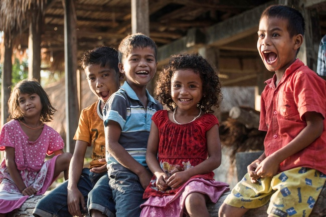

Apa Itu Kebahagiaan?
Menurut KBBI, kebahagiaan merupakan kesenangan dan ketentraman hidup lahir dan batin. Diartikan juga sebagai sebuah konsep berupa hasil evaluasi kehidupan yang menggambarkan kondisi yang Good Life dan Meaningful Life. Kebahagiaan tidak berbeda dengan life satisfaction, di mana kebahagiaan dapat didefinisikan sebagai "over all appreciation of one's life as a whole" (Veenhoven, 1988).
Bagaimana Mengukur Kebahagiaan?
Pengukuran tingkat kebahagiaan di Indonesia sudah dilakukan sejak tahun 2014 melalui Survei Pengukuran Tingkat Kebahagiaan (SPTK) yang dilaksanakan setiap 3 tahun sekali. Pada tahun 2021, tingkat kebahagiaan penduduk Indonesia diukur dari 3 dimensi yaitu:
- Kepuasan hidup(life satisfaction)
- Perasaan(affect)
- Makna hidup(eudaimonia)
Ayo Ukur Tingkat Kebahagiaanmu!